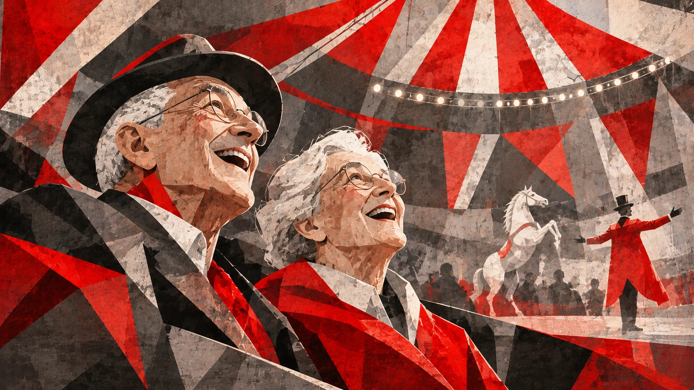
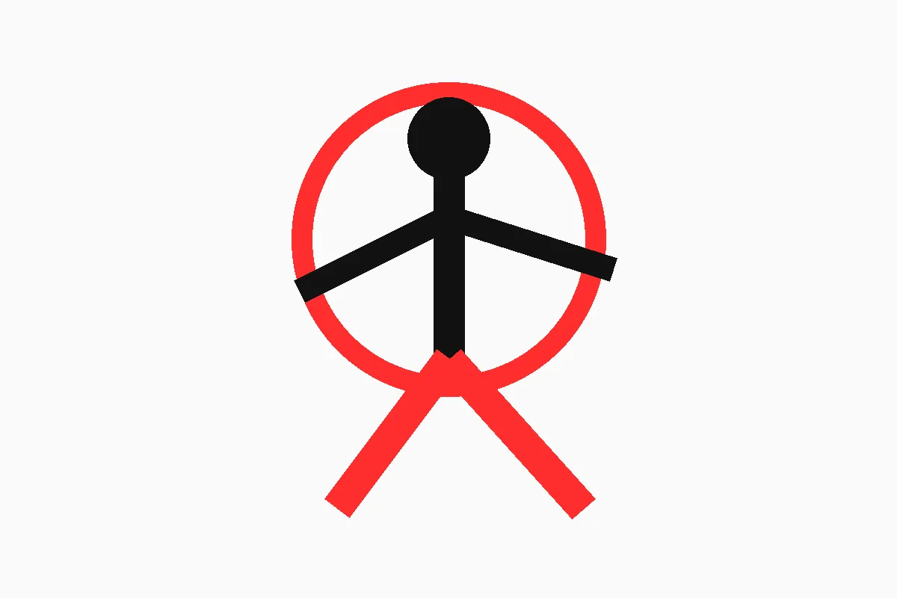
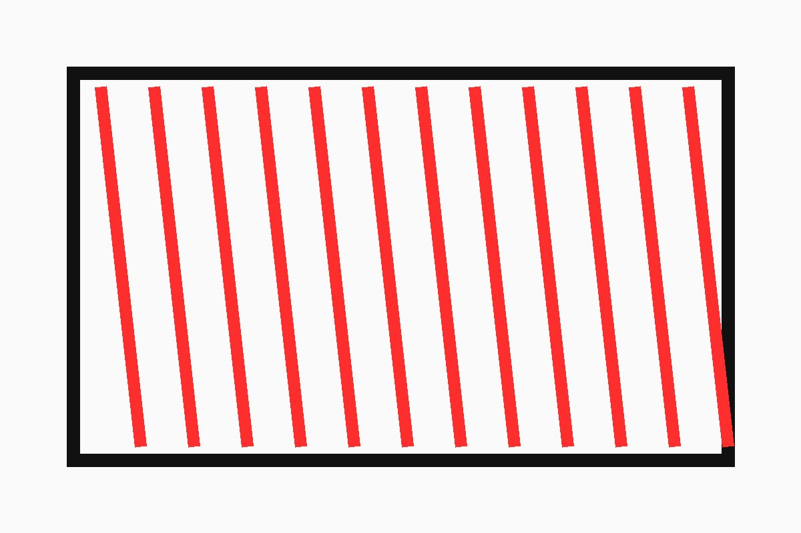

DER VORHANG GEHT AUF · 12.06.2027
ZEIT FÜR
MANEGE.
Ein eigenes Zirkusprogramm für Sie: am Vormittag, in angenehmem Tempo und mit einer Pause zum Ausruhen und Plaudern.

DER ABLAUF
Ihr Vormittag voller Höhepunkte.
Liebe Gäste, Sie müssen bei uns nichts überstürzen. Das Vormittagsprogramm ist speziell für Seniorinnen und Senioren zusammengestellt: mit gut verständlicher Moderation, bequemen Sitzmöglichkeiten und einer längeren Pause. Enkelkinder können Sie gerne mitbringen. Die Zeiten gehören zum fiktiven Veranstaltungskonzept.
| Zeit | Programmpunkt | Was Sie erwartet |
|---|---|---|
| 09:30 | Einlass & Ankommen | Platz nehmen, Zelt entdecken und entspannt ankommen. |
| 10:30 | Eröffnung: Willkommen in der Manege | Begrüßung mit Musik und einer kleinen Überraschung. |
| 10:50 | Balance & Bewegung | Eine Artistin zeigt ruhige und kraftvolle Balancekunst. |
| 11:20 | Gemütliche Pause im Zirkuscafé | Zeit für Getränke, Gespräche und einen bequemen Sitzplatz. |
| 11:50 | Jonglage mit Witz | Farben, Rhythmus und überraschende Requisiten. |
| 12:20 | Musik zum Erinnern und Mitsummen | Ein kleines Live-Ensemble spielt bekannte Melodien. |
| 12:40 | Großes Finale | Alle Künstlerinnen und Künstler kommen noch einmal zusammen. |
| 13:00 | Ausklang & Begegnung | In Ruhe verabschieden, Erinnerungsfoto machen oder noch bleiben. |

GUT ZU WISSEN
Ihr Tempo zählt.
Sie müssen nicht pünktlich zu jedem Programmpunkt auf Ihrem Platz sitzen. Der Einlass beginnt eine Stunde vor der Eröffnung, damit Sie in Ruhe ankommen können. Während der Pause sind Toiletten, Café und ein ruhiger Aufenthaltsbereich geöffnet. Wenn Sie Unterstützung benötigen, sprechen Sie unser Empfangsteam an.
Häufige Fragen lesenEin Platz zum Staunen.
Die Vorstellung findet in einem Zirkuszelt mit Sitzreihen statt. Die Wege zu den Plätzen werden freigehalten und gut sichtbar markiert. Bitte beachten Sie, dass es sich um ein fiktives Schulprojekt handelt: Die hier genannten Zeiten, Leistungen und Ortsangaben dienen der Gestaltung und sind keine reale Buchungszusage.

Wir wünschen Ihnen schon jetzt einen wunderbaren Vormittag in der Manege.